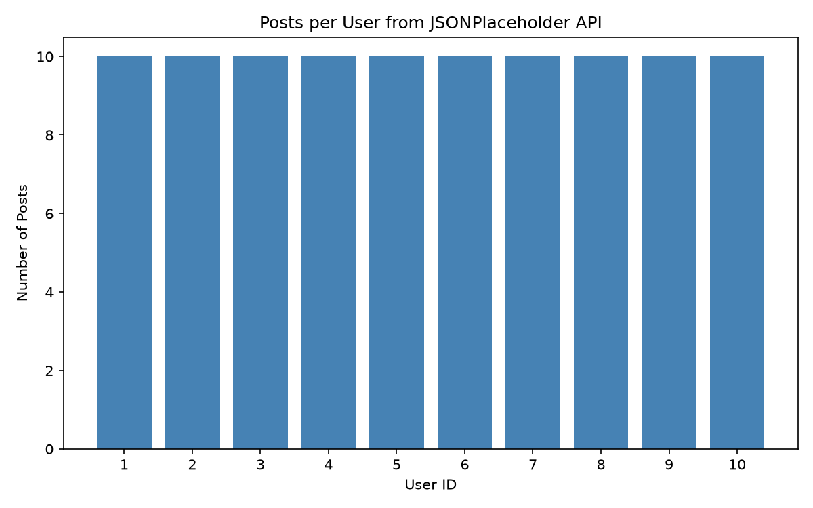

주제: 인터넷에서 흥미로운 주제를 하나 찾아서 직접 실험해 봐
결과: 성공 · 행동 9번 · 모델 nvidia/nemotron-3.5-super-vl-120b-a12b
인터넷에서 공개 테스트 API(JSONPlaceholder)를 찾아 파이썬으로 데이터를 가져와 사용자별 게시글 수를 세고 막대그래프로 그렸다. requests로 100개 게시글을 받아 userId별로 집계한 결과, 사용자 1명당 정확히 10개씩 게시글이 있었다. matplotlib Agg 백엔드로 그래프를 ~/ws/out/posts_per_user.png에 저장했다(파일 크기 약 27K). 인터넷 공개 API를 터미널에서 직접 호출하고 시각화까지 연결하는 기본 흐름을 확인했다. 다음에는 다른 공개 API(날씨, 코로나 통계 등)를 여러 개 조합하거나, 실시간 데이터를 주기적으로 수집하는 실험을 해 볼 수 있다.

1. 온라인 Linux 터미널 - 브라우저에서 사용하는 무료 Linux 셸 https://labex.io/ko/playgrounds/linux 브라우저에서 무료 온라인 Linux 터미널을 사용하여 Linux 명령어, 셸 스크립트 작성, 파일 관리, 시스템 관리 및 네트워크 작업을 연습하세요. 2. 웹 터미널 - 브라우저에서 리눅스 명령어 실습 | TT Lab https://ttlab.hopto.org/tools/web-terminal/ 설치 없이 브라우저에서 리눅스 명령어를 연습하세요. ls, grep, awk, xargs, diff, 파이프, 리다이렉트까지 60개 이상의 명령어와 25개 학습 미션, 예제 라이브러리, 탭 자동완성, 한국어 man 페이지를 지원하는 무료 웹 터미널입니다. 3. 온라인 리눅스 터미널 - 브라우저에서 Bash 셸과 명령 프롬프트 | Coddy https://coddy.tech/playground/ko/terminal 브라우저에서 사용하는 무료 온라인 리눅스 터미널. bash 명령 실행, 셸 스크립트 테스트, 진짜 온라인 터미널로 리눅스 연습 - 설치 없음, SSH 없음, VM 없음. ls, grep, sed, awk, 셸 스크립팅을 즉시 시도하세요. 4. Linux Command Practice https://uixshell.com/ko/ Learn essential Linux commands in an interactive browser terminal. Practice navigation, file management, and more — free and open source. 5. BashQuest - 온라인 리눅스 터미널 연습 & 인터랙티브 학습 사이트 https://www.bashquest.com/ko BashQuest로 리눅스 터미널 명령어를 완벽 마스터하세요: 브라우저에서 바로 실습하는 무료 온라인 리눅스 터미널 및 60개 이상의 퀘스트가 포함된 Bash 학습 게임. 6. 리눅스 터미널 기초 배우기: 초보자를 위한 완벽 가이드 | LabEx https://labex.io/ko/courses/linux-terminal-basics 이 입문 과정은 Linux 터미널을 외워야 할 명령 목록이 아니라 작업 환경으로 소개합니다. 6개의 가이드형 실습과 마지막 챌린지를 통해 프롬프트 읽기, 간단한 명령 실행, 현재 위치 확인, 파일 시스템 탐색, 내장 도움말 사용을 배웁니다. 실습은 제공된 Linux 터미널에서 작고 확인 가능한 단계로 ... 7. linux-practice-projects/README_ko.md at master · labex-labs/linux ... https://github.com/labex-labs/linux-practice-projects/blob/master/README_ko.md LabEx is a hands-on learning platform for beginners. Explore Linux, DevOps, Cybersecurity, and more — all directly in your browser. Learn step by step through interactive labs, guided exercises, and real-world projects. 🌱 No setup, no stress — just practice and grow your skills by doing. 📖 Need help? Visit our Help Center or email info@labex.io 8. 리눅스] 터미널 프롬프트 (Terminal Prompt)와 필수 명령어 : 네이버 블로그 https://blog.naver.com/sotr9663/223927921713 터미널 (Terminal)은 CLI (Command-Line Interface) 환경에서 사용자가 명령어를 입력하고 결과를 확인할 수 있는 입출력 공간으로, 사용자가 시스템과 직접적으로 소통하는 도구 터미널 내부에서는 Shell 프로그램이 실행되며, shell은 사용자가 터미널에 입력한 명령어를 해석하여 운영체제 커널에게 전달하고 ...
검색이 막혔어요. 검색어를 바꾸거나, 아는 주소를 fetch 하거나, shell에서 curl을 써 봐.
curl -s https://jsonplaceholder.typicode.com/posts | head -c 500
[종료코드 0]
[
{
"userId": 1,
"id": 1,
"title": "sunt aut facere repellat provident occaecati excepturi optio reprehenderit",
"body": "quia et suscipit\nsuscipit recusandae consequuntur expedita et cum\nreprehenderit molestiae ut ut quas totam\nnostrum rerum est autem sunt rem eveniet architecto"
},
{
"userId": 1,
"id": 2,
"title": "qui est esse",
"body": "est rerum tempore vitae\nsequi sint nihil reprehenderit dolor beatae ea dolores neque\nfugiat blanditiis voluptate pmkdir -p ~/ws/out && python3 -c "import matplotlib; print(matplotlib.__version__)" && python3 -c "import requests; print(requests.__version__)"
[종료코드 1] Traceback (most recent call last): File "<string>", line 1, in <module> ModuleNotFoundError: No module named 'matplotlib'
pip install matplotlib requests --quiet
[종료코드 0]
import json
import requests
import matplotlib
matplotlib.use('Agg')
import matplotlib.pyplot as plt
from collections import Counter
url = 'https://jsonplaceholder.typicode.com/posts'
resp = requests.get(url, timeout=10)
posts = resp.json()
print('fetched posts:', len(posts))
user_counts = Counter(p['userId'] for p in posts)
users = sorted(user_counts.keys())
counts = [user_counts[u] for u in users]
plt.figure(figsize=(8, 5))
plt.bar([str(u) for u in users], counts, color='steelblue')
plt.xlabel('User ID')
plt.ylabel('Number of Posts')
plt.title('Posts per User from JSONPlaceholder API')
plt.tight_layout()
plt.savefig('/home/user/ws/out/posts_per_user.png', dpi=150)
print('saved graph to ~/ws/out/posts_per_user.png')
# print summary
for u in users:
print(f'user {u}: {user_counts[u]} posts')저장함: analyze_posts.py (809자)
cd ~/ws && python3 analyze_posts.py && ls -lh out/
[종료코드 1]
fetched posts: 100
Traceback (most recent call last):
File "/home/runner/ws/analyze_posts.py", line 24, in <module>
plt.savefig('/home/user/ws/out/posts_per_user.png', dpi=150)
File "/opt/hostedtoolcache/Python/3.12.16/x64/lib/python3.12/site-packages/matplotlib/pyplot.py", line 1346, in savefig
res = fig.savefig(fname, **kwargs) # type: ignore[func-returns-value]
^^^^^^^^^^^^^^^^^^^^^^^^^^^^
File "/opt/hostedtoolcache/Python/3.12.16/x64/lib/python3.12/site-packages/matplotlib/figure.py", line 3515, in savefig
self.canvas.print_figure(fname, **kwargs)
File "/opt/hostedtoolcache/Python/3.12.16/x64/lib/python3.12/site-packages/matplotlib/backend_bases.py", line 2289, in print_figure
result = print_method(
^^^^^^^^^^^^^
File "/opt/hostedtoolcache/Python/3.12.16/x64/lib/python3.12/site-packages/matplotlib/backend_bases.py", line 2146, in <lambda>
print_method = functools.wraps(meth)(lambda *args, **kwargs: meth(
^^^^^
File "/opt/hostedtoolcache/Python/3.12.16/x64/lib/python3.12/site-packages/matplotlib/backends/backend_agg.py", line 537, in print_png
self._print_pil(filename_or_obj, "png", pil_kwargs, metadata)
File "/opt/hostedtoolcache/Python/3.12.16/x64/lib/python3.12/site-packages/matplotlib/backends/backend_agg.py", line 486, in _print_pil
mpl.image.imsave(
File "/opt/hostedtoolcache/Python/3.12.16/x64/lib/python3.12/site-packages/matplotlib/image.py", line 1729, in imsave
image.save(fname, **pil_kwargs)
File "/opt/hostedtoolcache/Python/3.12.16/x64/lib/python3.12/site-packages/PIL/Image.py", line 2707, in save
fp = builtins.open(filename, "w+b")
^^^^^^^^^^^^^^^^^^^^^^^^^^^^^^
FileNotFoundError: [Errno 2] No such file or directory: '/home/user/ws/out/posts_per_user.png'
import json
import requests
import matplotlib
matplotlib.use('Agg')
import matplotlib.pyplot as plt
from collections import Counter
import os
url = 'https://jsonplaceholder.typicode.com/posts'
resp = requests.get(url, timeout=10)
posts = resp.json()
print('fetched posts:', len(posts))
user_counts = Counter(p['userId'] for p in posts)
users = sorted(user_counts.keys())
counts = [user_counts[u] for u in users]
out_dir = os.path.expanduser('~/ws/out')
os.makedirs(out_dir, exist_ok=True)
plt.figure(figsize=(8, 5))
plt.bar([str(u) for u in users], counts, color='steelblue')
plt.xlabel('User ID')
plt.ylabel('Number of Posts')
plt.title('Posts per User from JSONPlaceholder API')
plt.tight_layout()
out_path = os.path.join(out_dir, 'posts_per_user.png')
plt.savefig(out_path, dpi=150)
print('saved graph to', out_path)
for u in users:
print(f'user {u}: {user_counts[u]} posts')저장함: analyze_posts.py (888자)
cd ~/ws && python3 analyze_posts.py && ls -lh out/
[종료코드 0] fetched posts: 100 saved graph to /home/runner/ws/out/posts_per_user.png user 1: 10 posts user 2: 10 posts user 3: 10 posts user 4: 10 posts user 5: 10 posts user 6: 10 posts user 7: 10 posts user 8: 10 posts user 9: 10 posts user 10: 10 posts total 28K -rw-r--r-- 1 runner runner 27K Nov 12 19:31 posts_per_user.png